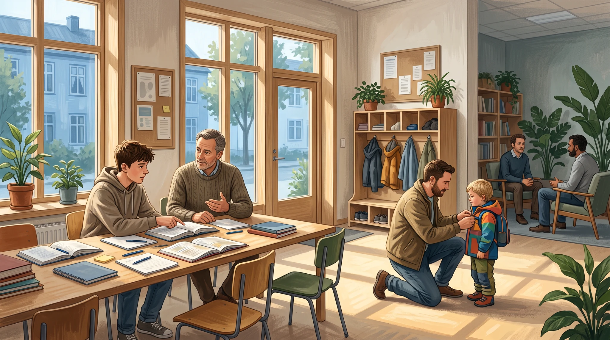

NYHETER · POLITIKK / LIKESTILLING
Regjeringen vil gi gutter og menn større plass i likestillingspolitikken
En ny stortingsmelding løfter fram gutters skolehverdag, menns helse og fedres rolle i familien. Regjeringen vil endre kurs etter nesten 20 år uten en egen melding om menns likestilling – men mye av arbeidet ligger fortsatt foran den.

Fredag 20. november la regjeringen fram Meld. St. 5 (2026–2027), «Ein likestillingspolitikk i takt med tida». Det er den første stortingsmeldingen viet gutter og menns likestilling på nesten 20 år. Den omfatter blant annet familieliv, skole, arbeidsliv, helse, vold og kriminalitet og tilhørighet i samfunnet.
Kilder: Kultur- og likestillingsdepartementet, 20. november 2026; Meld. St. 5 (2026–2027), regjeringens originaldokument.
Likestillingsminister Lubna Jaffery (Ap) mener at gutters og menns utfordringer har fått for liten oppmerksomhet. Regjeringens utgangspunkt er at likestilling ikke bare handler om hindringer kvinner møter: Også menn kan oppleve begrensede muligheter eller dårligere utfall på bestemte områder. Samtidig understreker meldingen at innsatsen for gutter og menn ikke skal erstatte arbeidet for kvinners rettigheter.
Skole, helse og farsrollen
På skolen peker regjeringen på at gutter i gjennomsnitt får svakere resultater enn jenter, oftere trenger individuell tilrettelegging og i mindre grad fullfører videregående opplæring. Meldingen trekker fram bedre lese- og skriveopplæring, oppfølging av elever og en mer praktisk og variert skolehverdag. Men forskjellene beskriver grupper, ikke evnene eller behovene til hver enkelt gutt og jente.
Kilder: Stortingsmeldingen, del om barnehage, skole og utdanning; Regjeringens pressemelding.
Helse er et annet hovedtema. Regjeringen viser til at menn har lavere forventet levealder og er overrepresentert i statistikken over rusproblemer og selvmord. I tillegg er forskjellene store mellom menn med høy og lav inntekt. Målet er at helsetjenestene skal fange opp problemer tidligere, og at innsatsen også skal rettes mot psykisk helse, rus og forebygging.
Kilde: Stortingsmeldingen, del om bedre helse for gutter og menn.
I familielivet vil regjeringen gjøre det lettere for fedre og mødre å være likeverdige omsorgspersoner og kombinere jobb med barn. Den viser blant annet til at enkelte fedre, særlig etter samlivsbrudd, opplever begrensninger i muligheten til å være til stede i barnas liv. En ny barnelov er allerede vedtatt og skal etter planen tre i kraft i 2027. Den skal ikke forveksles med et nytt lovvedtak som følger automatisk av dagens stortingsmelding.
Kilder: Stortingsmeldingen, del om familieliv; Regjeringens oversikt over tiltak som allerede er satt i gang.
Hva er allerede i gang – og hva er varslet?
Allerede igangsatt: Arbeid med lesing, oppfølging og mer praktisk skole; en vedtatt barnelov med planlagt ikrafttredelse i 2027.
Varslet videre: En ny handlingsplan for selvmordsforebygging med kjønns- og mangfoldsperspektiv tidlig i 2027, og forskning på balansen mellom jobb og familieliv.
En stortingsmelding fastsetter politiske prioriteringer. Den betyr ikke at alle tiltakene er vedtatt, finansiert eller gjennomført.
Meldingen tar også opp kjønnsdelingen i arbeidslivet. Menn er overrepresentert i risikofylte yrker og blant dem som omkommer i arbeidsulykker, mens kvinner og menn fortsatt velger svært ulike utdanninger og yrker. Regjeringen vil arbeide for tryggere arbeidsplasser og for at flere menn søker seg til kvinnedominerte yrker, og omvendt.
Fra mål til merkbare endringer
Meldingen bygger på Mannsutvalgets utredning fra 2024. Utvalget undersøkte hvordan blant annet kjønnsnormer, utdanning, arbeidsvilkår og tilgang til tjenester kan påvirke gutters og menns muligheter. Regjeringen løfter nå flere av temaene inn i en samlet politisk plan. At problemene er kartlagt, er likevel ikke i seg selv et svar på hvilke tiltak som vil virke best.
Kilder: NOU 2024: 8 – Likestillingens neste steg; Stortingsmeldingen, innledningskapitlet.
Det viktigste spørsmålet i fortsettelsen blir derfor hva regjeringen og Stortinget faktisk følger opp: Hvilke endringer i skolen blir gjennomført, hvordan skal bedre helse måles, og hvordan skal fedres rettigheter og barns behov ivaretas i praksis? Meldingen er lagt fram for Stortinget, men er ikke et samlet vedtak om nye rettigheter eller konkrete bevilgninger. Effekten kan først vurderes når tiltak blir iverksatt og resultatene undersøkt.
Kilder: Meld. St. 5 (2026–2027), videre behandling i Stortinget; NTB/Aftenposten, 20. november – offentlig omtale.
Kilder og dokumentasjon
- Kultur- og likestillingsdepartementet, 20. november 2026 – Meld. St. 5 (2026–2027)
- Kultur- og likestillingsdepartementet, 20. november – «Gutter og menn skal ha mer plass i likestillingspolitikken»
- Mannsutvalget, 2024 – NOU 2024: 8 Likestillingens neste steg
- NTB via Aftenposten, 20. november 2026 – «Gutter og menn får sin første likestillingsmelding på 20 år»
Redaksjonell merknad: Artikkelen skiller mellom varslede tiltak, eksisterende reformer og politiske mål. Uavhengig kommentar fra partier og fagmiljøer samt endelig bildegodkjenning kan suppleres før publisering. Ingen nye lov- eller budsjettvedtak er forutsatt.